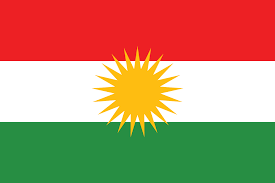

|  | KurdistanIraqi Kurdistan or Southern Kurdistan is the part of Kurdistan in northern Iraq. It is one of the four parts of Kurdistan, which also includes parts of southeastern Turkey, northern Syria, and northwestern Iran.Southern Kurdistan is largely mountainous, with the highest point being a 3,611 m (11,847 ft) point known locally as Cheekha Dar ("black tent"). Mountains in Iraqi Kurdistan include the Zagros, Sinjar Mountains, Hamrin Mountains, Mount Nisir and Qandil mountains. There are many rivers running through the region, which is distinguished by its fertile lands, plentiful water, and picturesque nature. The Great Zab and the Little Zab flow east-west in the region. The Tigris river enters Iraqi Kurdistan from Turkish Kurdistan. |
Erbil or Hawler known in ancient history as Urbil and Arbela, is the capital and most populated city in Kurdistan Region in Iraq It has around 1.5 million inhabitants while Erbil Governorate has 2,932,800 inhabitants as of 2020. Human settlement at Erbil may be dated back to the 5th millennium BC, which would make the city one of the oldest continuously inhabited areas in the world.At the heart of the city is the ancient Citadel of Erbil and Mudhafaria Minaret. The earliest historical reference to the region dates to the Third Dynasty of Ur of Sumer, when King Shulgi mentioned the city of Urbilum. The city was later conquered by the Assyrians.Erbil became an integral part of the kingdom of Assyria by the 15st century BC through to the end of the seventh century BC, after it was captured by the Gutians, and it was known in Assyrian annals variously as Urbilim, Arbela and Arba-ilu. Subsequent to this, it was part of the geopolitical province of Assyria under several empires in turn, including the Median Empire, the Achaemenid Empire (Achaemenid Assyria), Macedonian Empire, Seleucid Empire, Armenian Empire, Parthian Empire, Roman Assyria and, as well as being the capital of the tributary state of Adiabene between the mid-second century BC and early second century AD.